00이 매뉴얼에 대하여
기계환기설비 환기량 산정 시스템은 공간의 용도 · 바닥면적 · 층고 · 재실 인원을 넣으면 체적 기준(V × N)과 법정 필요환기량(「건축물의 설비기준 등에 관한 규칙」(2026. 8. 24. 시행) 별표 1의6 · 기계설비 기술기준 별표 3) 가운데 큰 값을 기준 환기량으로 하고, 여유율 · 외기 비율을 반영한 설계 환기량과 A4 환기량 산정서를 만듭니다.
| 항목 | 내용 |
|---|---|
| 대상 프로그램 | 기계환기설비 환기량 산정 시스템 MANMIN Ver-5.0(v5.0.11) — 탭 막대 「📘 매뉴얼」 버튼으로 이 문서가 열립니다 |
| 접속 주소 | manminkim-eng.github.io/ventilation-equipment |
| 매뉴얼 판 | Ver-5.0 (화면 표기와 같은 판 번호, 초판) · 2026-10-13 · 작성 김만민 건축사(㈜대성건축사사무소) |
| 내려받기 | PDF(A4) · 기계환기설비 환기량 산정 시스템 열기 |
| 예제 | 본문 그림은 예제 A(사무실 · 바닥 500 ㎡ · 층고 3 m · 재실 100명 · 여유율 10 %)로 캡처했습니다. 결과 기준 환기량 2,900 ㎥/h(법정 필요환기량이 체적 기준보다 큼) · 설계 환기량 3,190 ㎥/h. 예제 B(공동주택 세대 84 ㎡ × 2.3 m → 107 ㎥/h)는 3-5 |
| 근거 기준 | 「건축물의 설비기준 등에 관한 규칙」(2026. 8. 24. 시행) 제11조 · 별표 1의6 / 기계설비 기술기준 국토교통부 고시 제2021-851호(제2026-360호로 타법개정, 2026. 7. 8. 시행) 별표 3 2.1.2 — LawMCP 원문 대조(2026-10-13) |
| 읽는 순서 | 처음이면 1장 → 2장(따라하기) → 필요할 때 3장(화면별 상세). 설계도서에 옮기기 전에는 4장(기술기준) · 5장(작업 방법) |
01한눈에 보기
설치 없이 브라우저에서 바로 실행되는 단일 페이지 앱(PWA)입니다. 입력한 내용은 내 PC 브라우저 안에서만 계산되며 서버로 전송되지 않습니다.
무엇을 산정하나
실 하나(또는 여러 구역)의 기준 · 설계 환기량과 외기 도입량
용도
공동주택 · 사무실 · 판매 · 식당 · 숙박 · 병원 · 학교 · 도서관 · 공연 · 체육 · 주차장 · 화장실 · 주방 · 실험실 · 회의실 · 로비 · 창고 · 직접입력
근거
설비규칙 제11조 · 별표 1의6 · 기계설비 기술기준 별표 3
1-1. 화면 구성
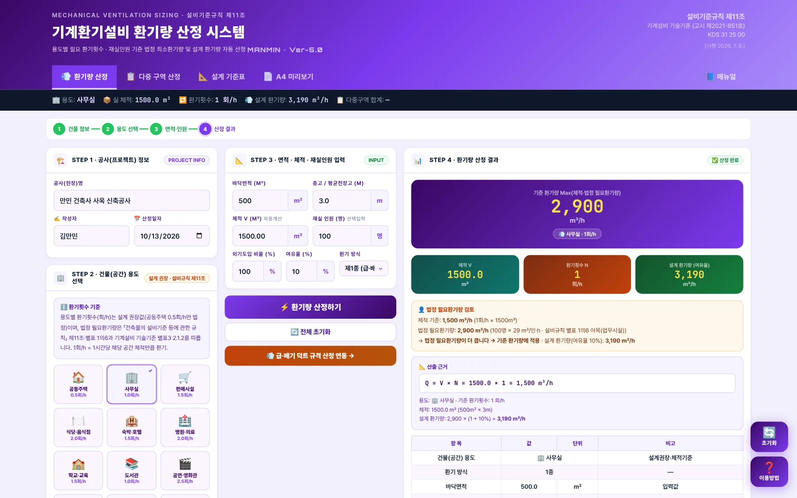
12345678- 1작업 탭: 환기량 산정 · 다중 구역 산정 · 설계 기준표 · A4 미리보기 · 매뉴얼
- 2요약 스트립: 용도 · 실 체적 · 환기횟수 · 설계 환기량 · 다중구역 합계
- 3진행 단계: 건물 정보 → 용도 선택 → 면적 · 인원 → 산정 결과
- 4STEP 1 공사(프로젝트) 정보
- 5STEP 2 건물(공간) 용도 선택
- 6STEP 3 면적 · 체적 · 재실인원 입력
- 7STEP 4 환기량 산정 결과
- 8오른쪽 아래 「초기화」 · 「이용방법」
| 영역 | 내용 |
|---|---|
| 왼쪽 — 공사 · 용도 | STEP 1 공사명 · 작성자 · 작성일 → STEP 2 용도 버튼(기준 환기횟수 표시) |
| 가운데 — 입력 | STEP 3 바닥면적 · 층고(체적 자동) · 재실 인원 · 외기 비율 · 여유율 · 환기 방식 → 「⚡ 환기량 산정하기」 |
| 오른쪽 — 결과 | 기준 환기량(큰 숫자) → 체적 · 환기횟수 · 설계 환기량 → 법정 필요환기량 검토 → 산출 근거 → 결과 표 → 덕트 규격 산정기 연동 |
1-2. 작업 탭·근거 표시
- 1환기량 산정
- 2다중 구역 산정 — 여러 실 일괄
- 3설계 기준표 — 용도별 환기횟수 · 법정 기준 · 환기 방식
- 4A4 미리보기 — 환기량 산정서 · 인쇄 · JPG
- 5매뉴얼(이 문서)
- 6근거: 설비기준규칙 제11조 · 기계설비 기술기준(고시 제2021-851호) · 2026.7.8. 시행
1-3. 설치·보관·매뉴얼
| 항목 | 내용 |
|---|---|
| 설치 | 주소창의 설치 아이콘 또는 휴대전화 「홈 화면에 추가」로 앱처럼 쓸 수 있습니다. 한 번 연 뒤에는 인터넷 없이도 계산됩니다 |
| 결과 보관 | 문서로 남기려면 A4 산정서(PDF · JPG)를 쓰십시오. 다중 구역 표는 「📥 CSV 내보내기」로 저장합니다 |
| 매뉴얼 | 탭 막대 오른쪽 끝 「📘 매뉴얼」 — 인터넷 연결 시 새 창으로 열립니다. 700px 이하 화면에서는 탭 막대가 두 줄로 접힙니다 |
| 업데이트 | 새 버전이 올라오면 다음 접속 때 자동으로 바뀝니다. 화면이 예전 그대로면 새로 고침(Ctrl+F5) |
021분 따라하기
예제 A로 5단계를 따라 하면 사무실 기준 환기량 2,900 ㎥/h · 설계 환기량 3,190 ㎥/h가 나옵니다.
- ① 공사 정보STEP 1에 공사명 · 작성자 · 작성일을 넣습니다. A4 산정서 머리에 들어갑니다(3-1).
- ② 용도 선택STEP 2에서 「🏢 사무실」을 누릅니다. 아래에 기준 환기횟수 1 회/h · 「설계권장 · 체적기준」이 표시됩니다(3-2).
- ③ 면적 · 인원STEP 3에 바닥면적 500, 층고 3을 넣으면 체적 1,500 ㎥가 자동으로 채워집니다. 재실 인원 100, 외기도입 비율 100 %, 여유율 10 %, 환기 방식 「제1종」(3-3).
- ④ 산정「⚡ 환기량 산정하기」를 누르면 체적 기준 1,500 ㎥/h와 법정 필요환기량 2,900 ㎥/h(100명 × 29 ㎥/인·h, 별표 1의6 업무시설)를 비교해 큰 값 2,900 ㎥/h를 기준 환기량으로 잡습니다(3-4).
- ⑤ A4 산정서「📄 A4 미리보기」에서 「🖨️ 인쇄 / PDF」 또는 「🖼️ JPG 저장」으로 환기량 산정서를 남깁니다(3-9).
| 항목 | 예제 A 결과 |
|---|---|
| 체적 V | 500 ㎡ × 3 m = 1,500 ㎥ |
| 체적 기준 환기량 | 1,500 ㎥ × 1 회/h = 1,500 ㎥/h (설계권장·체적기준) |
| 법정 필요환기량 | 100명 × 29 ㎥/인·h = 2,900 ㎥/h (설비규칙 별표 1의6 아목(업무시설)) |
| 기준 환기량 | 2,900 ㎥/h — Max(체적 · 법정) |
| 설계 환기량 | 3,190 ㎥/h — 기준 × (1 + 10 %) |
| 외기 도입량 | 3,190 ㎥/h — 설계 × 100 % |
03화면별 기능 상세
3-1. 공사 정보 (STEP 1)
- 1공사명
- 2작성자
- 3작성일
3-2. 용도 선택 (STEP 2)
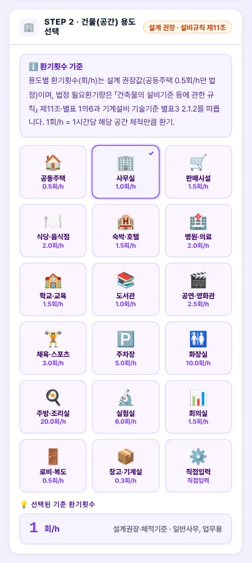
1234- 1용도 18종(직접입력 포함)
- 2선택한 용도
- 3기준 환기횟수
- 4산출 기준
| 항목 | 내용 |
|---|---|
| 용도 버튼 | 버튼마다 기준 환기횟수(회/h)가 적혀 있습니다. 누르면 STEP 3 아래 「선택된 기준 환기횟수」 칸에 값과 산출 기준이 표시됩니다 |
| 공동주택 0.5 | 「건축물의 설비기준 등에 관한 규칙」(2026. 8. 24. 시행) 제11조① 법정 최소(30세대 이상 신축공동주택등) |
| 그 밖의 회/h | 설계 권장값입니다(법령 수치 없음). 법정 판단은 재실 인원 또는 주차장 면적으로 계산하는 「법정 필요환기량」으로 합니다(4-6) |
| 직접입력 | 환기횟수를 손으로 넣습니다. 인원을 넣으면 일반 건축물 25 ㎥/인·h(기술기준 별표 3 2.1.2(2))로 법정 필요환기량을 비교합니다 |
3-3. 면적·체적·인원 입력 (STEP 3)
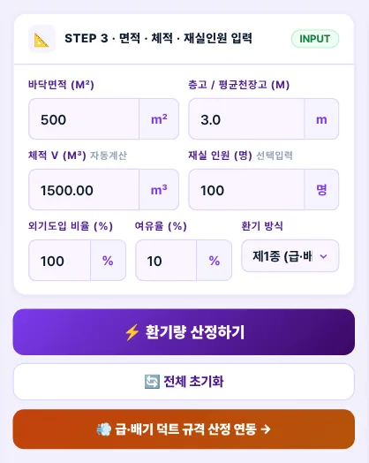
12345678910- 1바닥면적
- 2층고(평균 천장고)
- 3체적 — 면적 × 층고 자동, 직접 입력 가능
- 4재실 인원(선택)
- 5외기도입 비율
- 6여유율
- 7환기 방식 — 제1 · 2 · 3종
- 8환기량 산정하기
- 9전체 초기화
- 10급 · 배기 덕트 규격 산정기 연동
| 항목 | 내용 |
|---|---|
| 체적 | 경사 천장처럼 면적 × 층고와 다르면 체적 칸에 실제 체적을 직접 넣습니다 |
| 재실 인원 | 넣으면 용도별 필요 환기량(별표 1의6: 25 · 29 · 36 ㎥/인·h)으로 법정 필요환기량을 계산해 체적 기준과 비교합니다. 비우면 체적 기준만 씁니다 |
| 외기도입 비율 | 설계 환기량 가운데 외기로 들이는 비율(%). 0을 넣으면 0으로 계산합니다 |
| 여유율 | 기준 환기량에 더하는 여유(%). 0을 넣으면 여유 없이 계산합니다 |
| 환기 방식 | A4 산정서 · 결과 표 표기용입니다. 환기량 계산에는 영향이 없습니다 |
3-4. 산정 결과 (STEP 4)
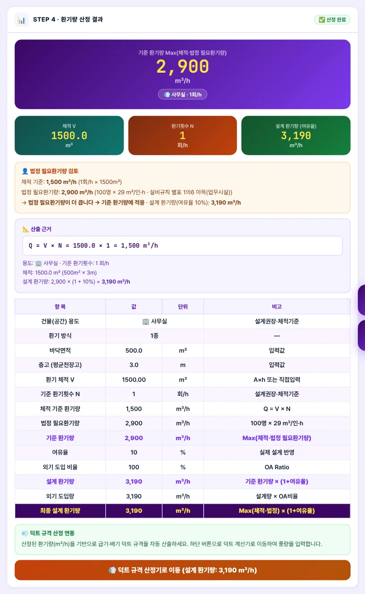
12345678- 1기준 환기량 Max(체적 · 법정 필요환기량)
- 2체적 V
- 3환기횟수 N
- 4설계 환기량(여유율)
- 5법정 필요환기량 검토 — 어느 쪽이 큰지
- 6산출 근거 — Q = V × N
- 7결과 표 — 항목 · 값 · 단위 · 비고
- 8덕트 규격 산정기로 이동(설계 환기량)
| 항목 | 내용 |
|---|---|
| 큰 숫자 | 기준 환기량 = Max(체적 기준, 법정 필요환기량). 여유율을 더하기 전 값입니다 |
| 설계 환기량 | 기준 환기량 × (1 + 여유율). 요약 스트립 · A4 「최종 설계 환기량」 · 덕트 연동 버튼이 모두 이 값입니다 |
| 법정 필요환기량 검토 | 인원(또는 주차장 면적)을 넣었을 때 나타납니다. 계산식과 근거 조문(예: 설비규칙 별표 1의6 아목)을 함께 보여 줍니다 |
3-5. 공동주택 세대 (예제 B)
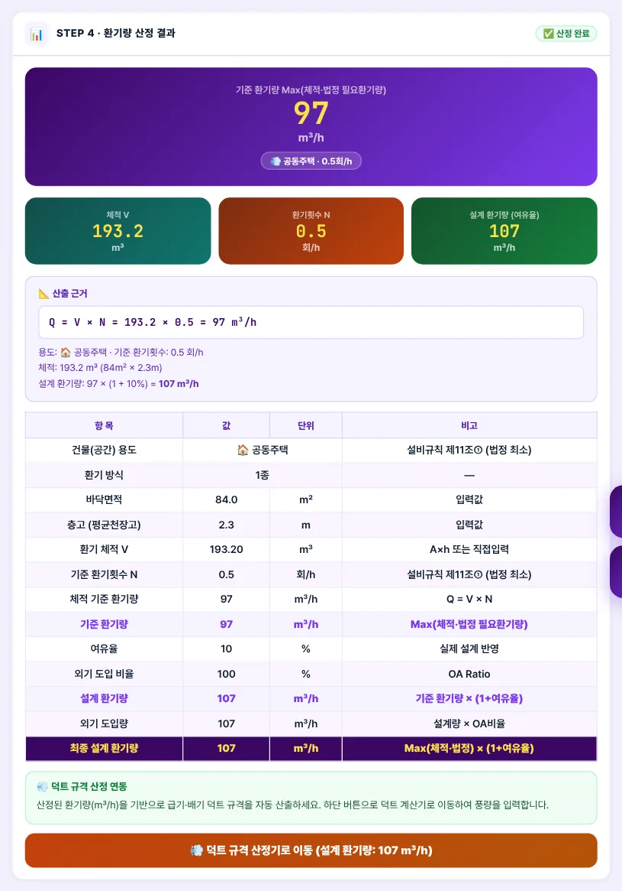
12- 1공동주택 0.5회/h — 설비규칙 제11조①
- 2법정 필요환기량 행 없음(체적 기준)
| 항목 | 예제 B 결과 |
|---|---|
| 체적 V | 84 ㎡ × 2.3 m = 193.2 ㎥ |
| 체적 기준 환기량 | 193.2 ㎥ × 0.5 회/h = 97 ㎥/h (설비규칙 제11조① (법정 최소)) |
| 기준 환기량 | 97 ㎥/h — Max(체적 · 법정) |
| 설계 환기량 | 107 ㎥/h — 기준 × (1 + 10 %) |
| 외기 도입량 | 107 ㎥/h — 설계 × 100 % |
공동주택은 체적 기준 0.5회/h 자체가 법정 최소입니다. 세대 환기 장치를 고를 때는 설계 환기량 107 ㎥/h 이상인 제품을 고르고, 별표 1의5(기계환기설비 기준)와 기술기준 별표 3 2.1.2(1)의 소음(55 dB 이하) · 필터 조건을 함께 확인합니다.
3-6. 다중 구역 산정 탭
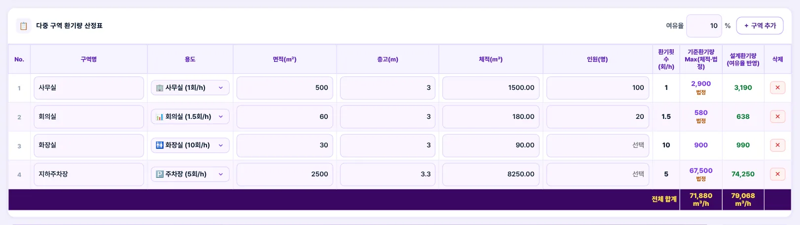
1234- 1여유율 — 전 구역 공통
- 2용도 · 면적 · 층고 · 체적 · 인원 · 환기횟수 · 기준 · 설계
- 3지하주차장 — 27 ㎥/㎡·h(법정)로 기준 환기량 결정
- 4전체 합계
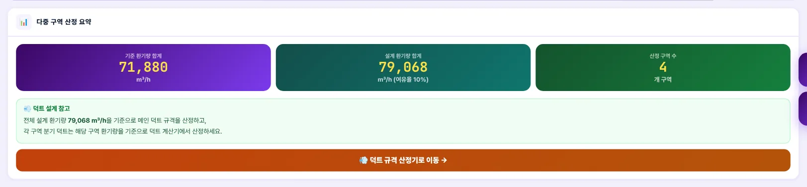
12- 1기준 · 설계 환기량 합계 · 구역 수
- 2덕트 설계 참고
| 항목 | 내용 |
|---|---|
| 구역 추가 | 「＋ 구역 추가」로 행을 늘리고 구역명 · 용도 · 면적 · 층고(또는 체적) · 인원을 넣습니다 |
| 기준 환기량 칸 | 구역마다 Max(체적 기준, 법정 필요환기량). 법정 쪽이 크면 숫자 아래 「법정」이 붙습니다 |
| 여유율 | 표 머리의 입력란 하나로 전 구역에 적용합니다(기본 10 %) |
| CSV 내보내기 | 구역별 체적 기준 · 법정 필요 · 기준 · 설계 환기량을 엑셀에서 열 수 있는 CSV로 저장합니다 |
3-7. 설계 기준표 탭
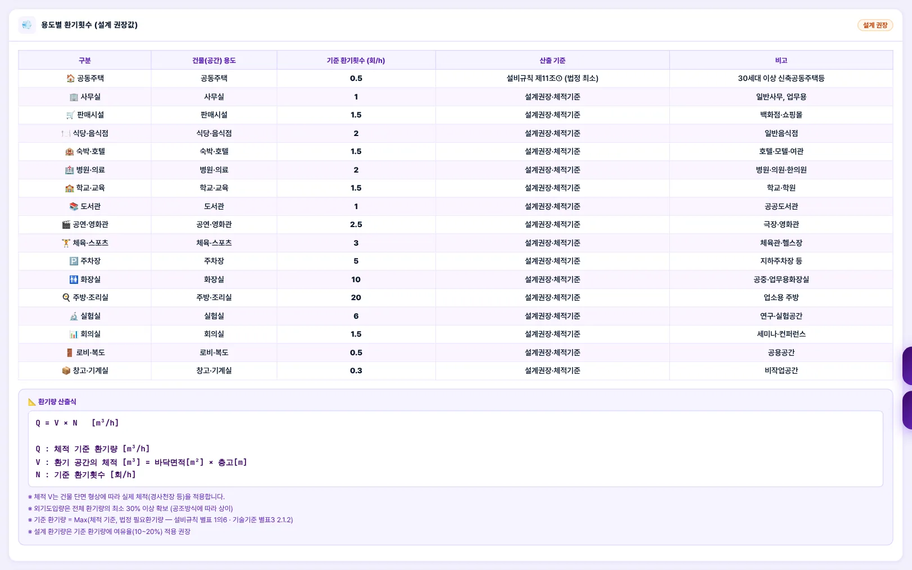
12- 1용도 · 기준 환기횟수 · 산출 기준
- 2환기량 산출식
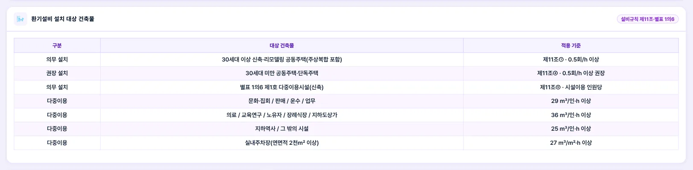
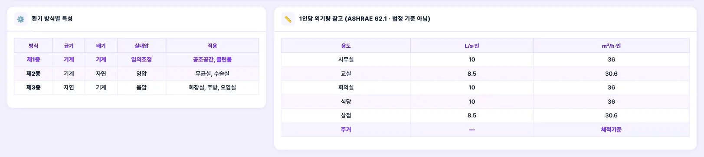
3-8. 이용방법 창
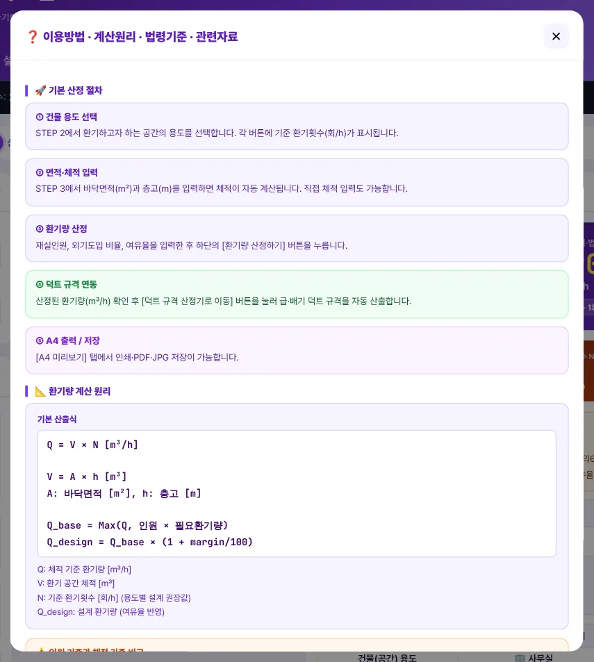
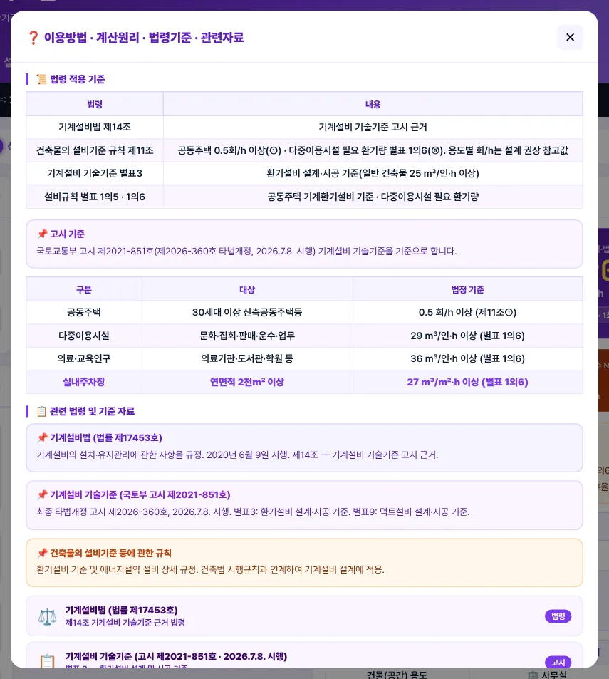
3-9. A4 미리보기·출력
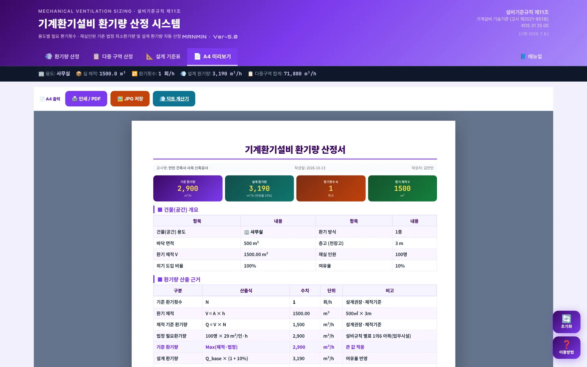
1234- 1인쇄 / PDF
- 2JPG 저장
- 3덕트 계산기
- 4A4 환기량 산정서
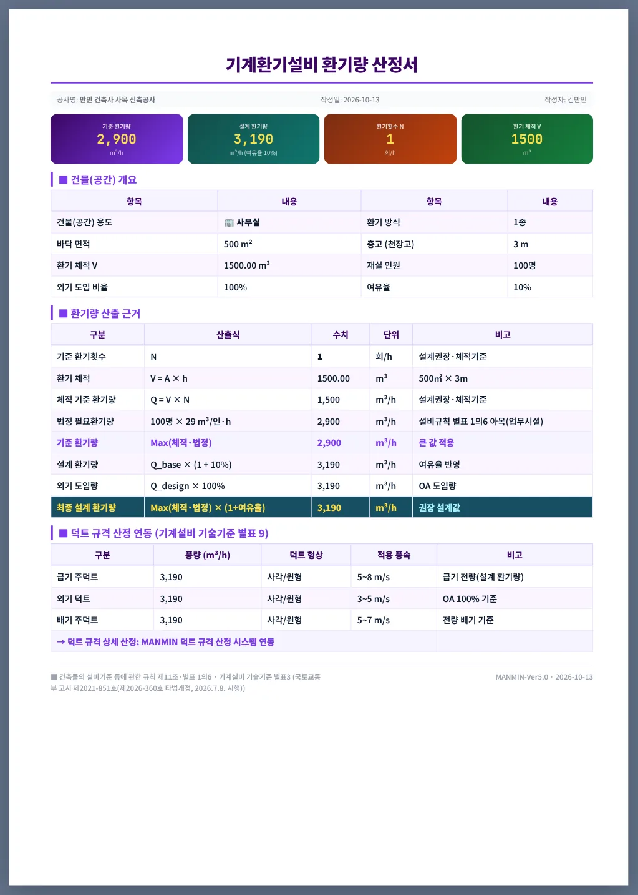
123- 1건물(공간) 개요
- 2환기량 산출 근거
- 3덕트 규격 산정 연동(급기 · 외기 · 배기)
| 항목 | 내용 |
|---|---|
| 인쇄 / PDF | 브라우저 인쇄 창에서 「PDF로 저장」을 고르면 PDF가 됩니다. 배경색 인쇄를 켜 두십시오 |
| JPG 저장 | A4 쪽 그림으로 저장합니다 |
| 덕트 연동 표 | 급기 주덕트 = 설계 환기량, 외기 덕트 = 설계 × 외기 비율, 배기 주덕트 = 설계 환기량(전량 배기) |
3-10. 휴대전화 화면
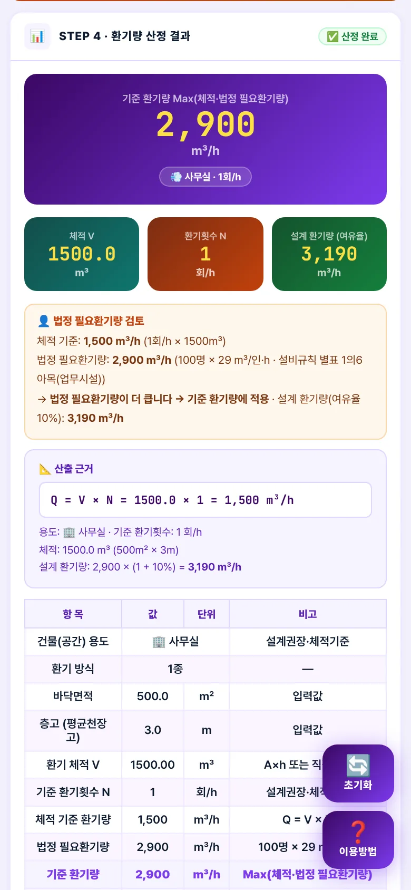
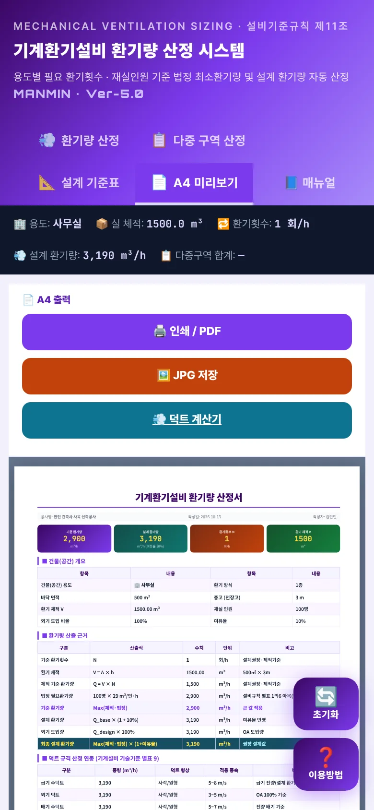
좁은 화면에서는 공사 정보 → 용도 → 입력 → 결과가 한 줄로 쌓입니다. 700px 이하에서는 탭 막대가 두 줄로 접혀 「매뉴얼」까지 모두 보입니다. 다중 구역 표는 좌우로 밀어서 봅니다.
04기술기준 해설
4-1. 근거 체계
| 근거 | 내용 |
|---|---|
| 설비규칙 제11조① | 30세대 이상 공동주택(주상복합 포함) 신축 · 리모델링 시 시간당 0.5회 이상 환기가 되도록 자연 또는 기계환기설비 설치 |
| 설비규칙 제11조④ | 30세대 미만 공동주택 · 단독주택 등에 0.5회/h 이상 환기설비 설치를 허가권자가 권장할 수 있음 |
| 설비규칙 제11조⑤ · 별표 1의6 | 다중이용시설 신축 시 기계환기설비 설치 대상과 필요 환기량(㎥/인·h). 용량은 시설이용 인원당 환기량을 원칙으로 산정 |
| 기술기준 별표 3 2.1.2(1) | 아파트 · 연립주택 필요환기량 0.5회/h(설비규칙 제11조① 인용), 세대 환기설비 소음 55 dB 이하, 주방 후드 면풍속 0.3 m/s 이상 |
| 기술기준 별표 3 2.1.2(2) | 공동주택 이외 건축물 필요환기량 25 ㎥/인·h 이상 |
| 기술기준 별표 3 1.3 | 설비규칙 등과 다르면 해당 규정을 따름 |
| 기계설비법 제14조 | 국토교통부장관이 기계설비 기술기준을 정해 고시 |
| 설계 권장값 | 공동주택 외 용도별 환기횟수(회/h) — 법령 수치가 없는 값 |
「건축물의 설비기준 등에 관한 규칙」(2026. 8. 24. 시행) · 기계설비 기술기준 국토교통부 고시 제2021-851호(제2026-360호로 타법개정, 2026. 7. 8. 시행) · 기계설비법(법률 제17453호, 2020.6.9. 시행) — LawMCP 원문 대조 2026-10-13
4-2. 공동주택 0.5회/h
v5.0까지는 0.7회/h를 「법정 최소」로 표기했으나 원문은 0.5회/h입니다(v5.0.10 정정 · 4-10). 0.7처럼 더 큰 값을 쓰려면 「직접입력」이나 여유율로 반영합니다.
4-3. 다중이용시설 필요 환기량 (별표 1의6)
| 구분 | 필요 환기량(㎥/인·h 이상) |
|---|---|
| 지하역사 | 25 |
| 지하도상가(매장 기준) | 36 |
| 문화 및 집회시설 | 29 |
| 판매시설 | 29 |
| 운수시설 | 29 |
| 의료시설 | 36 |
| 교육연구시설 | 36 |
| 노유자시설 | 36 |
| 업무시설 | 29 |
| 자동차 관련 시설(실내주차장) | 27 ㎥/㎡·h |
| 장례식장 | 36 |
| 그 밖의 시설 | 25 |
필요 환기량은 예상 이용인원이 가장 많은 시간대를 기준으로 산정합니다(별표 1의6 비고 나). 설치 대상(연면적 · 병상 수 등)은 별표 1의6 제1호를 따릅니다. 앱의 용도 버튼과 대응은 부록 A2.
4-4. 일반 건축물 25 ㎥/인·h
공동주택 이외 건축물의 필요환기량은 25 ㎥/인·h 이상입니다(기술기준 별표 3 2.1.2(2)②). 별표 1의6에 해당하지 않는 식당 · 숙박 · 직접입력 용도에 이 값을 씁니다. 별표 1의6 대상이면 그 값(29 · 36)이 우선합니다.
4-5. 실내주차장
별표 1의6 자목(연면적 2천 ㎡ 이상 실내주차장)은 단위면적당 27 ㎥/㎡·h입니다(비고 라). 주차장법 시행규칙 제6조제1항제8호는 일산화탄소 농도(앞뒤 8시간 평균 50 ppm 이하, 실내주차장 25 ppm 이하)를 정할 뿐 환기 횟수 규정은 없습니다. 기술기준 별표 3 2.1.2(4)는 CO 감지기 자동운전 · 제연겸용 송풍기 250 ℃ 60분 이상을 요구합니다.
4-6. 설계 권장 환기횟수
공동주택을 뺀 용도별 회/h는 법령 수치가 아닌 설계 권장값입니다. 화장실 · 주방 · 창고처럼 사람 수로 정하기 어려운 실은 이 값으로 체적 기준 환기량을 구합니다. 다중이용시설은 인원 기준이 대개 더 크므로 재실 인원을 꼭 넣으십시오 — 예제 A 사무실은 체적 기준 1,500 ㎥/h보다 법정 필요환기량 2,900 ㎥/h가 약 1.9배 큽니다.
4-7. 기준·설계 환기량
계산값은 부동소수 오차를 없앤 뒤 올림해 정수 ㎥/h로 표시합니다(예: 2,900 × 1.1 = 3,190).
4-8. 외기량·덕트 연동
| 구분 | 풍량 · 풍속 |
|---|---|
| 급기 주덕트 | 설계 환기량 전량 — 권장 풍속 5~8 m/s |
| 외기 덕트 | 설계 환기량 × 외기 비율 — 3~5 m/s |
| 배기 주덕트 | 설계 환기량(전량 배기) — 5~7 m/s |
| 덕트 규격 | 「💨 덕트 규격 산정기로 이동」에서 MANMIN 덕트 규격 산정 시스템으로 이어서 산정(기술기준 별표 9) |
풍속 값은 앱의 설계 참고값입니다. 제3종(배기 기계) 방식이면 급기 덕트 대신 급기구 면적을 검토합니다.
4-9. 계산 범위·한계
| 항목 | 내용 |
|---|---|
| 계산하는 것 | 체적 기준 · 법정 필요환기량 · 기준 · 설계 환기량 · 외기량, 여러 구역 합계 |
| 계산하지 않는 것 | 기계실 · 전기실 · 발전기실 · 엘리베이터 기계실(발열 · 연소공기 기준, 기술기준 별표 3 2.1.2(3)), 주방 후드 면풍속, CO · CO₂ · 미세먼지 농도, 열회수 효율, 송풍기 정압 |
| 설치 대상 판정 | 별표 1의6 제1호의 연면적 · 병상 수 기준은 표로만 안내합니다. 해당 여부는 설계자가 판정합니다 |
| 여러 구역 | 다중 구역 합계는 단순 합입니다. 동시사용률 · 계통 분리는 반영하지 않습니다 |
4-10. v5.0.10 근거·계산 정정 (2026-10-13)
| 항목 | 기존 | 정정 |
|---|---|---|
| 공동주택 | 0.7회/h를 「법정 최소」로 표기 | 0.5회/h — 설비규칙 제11조① |
| 인원 기준 | 36 ㎥/인·h 일괄(ASHRAE) | 별표 1의6 용도별 25 · 29 · 36, 그 밖은 기술기준 별표 3 25 |
| 주차장 | 「제11조 … 2회/h」 · 체적 × 5회/h만 | 별표 1의6 자목 27 ㎥/㎡·h와 비교 |
| 결과 일관성 | 최종값에 여유율 미반영 · 설계값이 인원 기준 무시 | 기준 = Max(체적 · 법정), 설계 = 기준 × (1 + 여유율) |
| 입력 0 | 여유율 · 외기 비율 0 → 10 · 100으로 바뀜 | 0 그대로 계산 |
| 근거 표기 | 기계설비법 제21조 · 고시 2021.06.07. · 「법정 환기량」 명칭 | 설비규칙 제11조 · 기계설비법 제14조 · 제2026-360호 타법개정 · 「환기량 산정 시스템」 |
| 다중 구역 · A4 | 체적 기준만 · 여유율 10 % 고정 · 급기 덕트 = 외기량 | 인원 · 법정 비교 · 여유율 입력 · 급기 = 설계량, 외기 덕트 행 추가 |
정정 전 판으로 산정한 다중이용시설 · 주차장 환기량은 법정 필요환기량보다 작게 나왔을 수 있습니다. 이전 산정서가 있으면 다시 확인하십시오.
05실무 작업 방법
5-1. 단계별 절차
| 단계 | 내용 |
|---|---|
| ① 대상 판정 | 공동주택 세대수(30세대 이상), 다중이용시설 해당 여부(별표 1의6 제1호 연면적 · 병상 수)를 먼저 정합니다 |
| ② 실 목록 | 실별 용도 · 바닥면적 · 천장고 · 최대 재실 인원(예상 이용인원이 가장 많은 시간대)을 정리합니다 |
| ③ 구역 산정 | 다중 구역 탭에 실을 넣고 여유율을 정해 일괄 산정합니다. 「법정」 표시가 붙은 실은 인원 · 면적 기준이 결정한 실입니다 |
| ④ 대표 실 산정서 | 주요 실은 환기량 산정 탭에서 다시 산정해 A4 산정서(PDF)를 남깁니다 |
| ⑤ 덕트 · 장비 | 설계 · 외기 환기량으로 덕트 규격 산정기와 환기 장치 선정으로 넘어갑니다 |
5-2. 도면 반영 전 확인
| 항목 | 확인 |
|---|---|
| 인원 | 최대 재실 인원(좌석 수 · 면적당 인원)이 건축 계획과 같은가 |
| 법정 비교 | 다중이용시설 · 실내주차장에서 기준 환기량이 법정 필요환기량 이상인가 |
| 공동주택 | 세대 환기 장치 풍량이 0.5회/h 이상 · 소음 55 dB 이하 · 필터 KS B 6141(별표 3 2.1.2(1)) |
| 특수실 | 보일러실 · 전기실 · 발전기실 · 주방은 발열 · 연소공기 · 후드 면풍속으로 따로 검토했는가 |
| 외기 | 외기 비율이 공조 방식 · 열회수 장치와 맞는가 |
5-3. 다중 구역 예제
| 구역 | 면적 ㎡ | 체적 ㎥ | 인원 | N 회/h | 체적 기준 | 법정 필요 | 기준 | 설계 +10% |
|---|---|---|---|---|---|---|---|---|
| 사무실 | 500 | 1,500 | 100 | 1 | 1,500 | 2,900 | 2,900 | 3,190 |
| 회의실 | 60 | 180 | 20 | 1.5 | 270 | 580 | 580 | 638 |
| 화장실 | 30 | 90 | — | 10 | 900 | — | 900 | 990 |
| 지하주차장 | 2,500 | 8,250 | — | 5 | 41,250 | 67,500 | 67,500 | 74,250 |
합계 기준 환기량 71,880 ㎥/h · 설계 환기량 79,068 ㎥/h. 사무실 · 회의실은 인원 기준(29 ㎥/인·h), 지하주차장은 면적 기준(27 ㎥/㎡·h)이 체적 기준보다 커서 기준 환기량을 정했고, 화장실은 체적 기준(10회/h)으로 정했습니다.
06문제 해결·FAQ
| 증상 | 해결 |
|---|---|
| 「건물 용도를 먼저 선택하세요」 | STEP 2에서 용도 버튼을 누른 뒤 산정하십시오 |
| 「체적 또는 면적 · 층고를 입력하세요」 | 바닥면적과 층고를 모두 넣거나 체적을 직접 넣으십시오 |
| 법정 필요환기량이 안 나와요 | 재실 인원을 비웠거나, 용도에 필요 환기량이 없는 경우(화장실 · 주방 · 로비 · 창고 · 공동주택)입니다. 주차장은 바닥면적으로 계산합니다 |
| 예전 산정서보다 값이 커졌어요 | v5.0.10(2026-10-13)에서 인원 기준을 별표 1의6 값으로, 결과를 Max(체적 · 법정) × (1 + 여유율)로 정정했습니다(4-10). 공동주택은 0.7 → 0.5회/h로 작아졌습니다 |
| 0.7회/h로 설계하고 싶어요 | 「직접입력」으로 0.7을 넣거나 여유율로 반영하십시오. 법정 최소는 0.5회/h입니다 |
| 초기화해도 다중구역 합계가 남아요 | 「초기화」는 환기량 산정 탭만 지웁니다. 다중 구역 표는 행의 ✕로 지운 뒤 「⚡ 전체 구역 일괄 산정」을 다시 누르십시오 |
| 화면이 예전 판이에요 | 새로 고침(Ctrl+F5) 또는 앱을 닫았다 다시 여십시오 |
부록
A1. 예제 입력값
| 항목 | 예제 A | 예제 B |
|---|---|---|
| 용도 | 사무실(업무시설) | 공동주택 |
| 면적 · 층고 | 500 ㎡ × 3 m = 1,500 ㎥ | 84 ㎡ × 2.3 m = 193.2 ㎥ |
| 인원 · 외기 · 여유율 | 100명 · 100 % · 10 % | — · 100 % · 10 % |
| 결과 | 기준 2,900 · 설계 3,190 ㎥/h | 기준 96.6 · 설계 107 ㎥/h |
A2. 용도별 기준표 (앱 내장값)
| 용도 | N 회/h | 환기횟수 근거 | 법정 필요환기량 | 근거 |
|---|---|---|---|---|
| 공동주택 | 0.5 | 설비규칙 제11조① (법정 최소) | — | — |
| 사무실 | 1 | 설계권장·체적기준 | 29 ㎥/인·h | 설비규칙 별표 1의6 아목(업무시설) |
| 판매시설 | 1.5 | 설계권장·체적기준 | 29 ㎥/인·h | 설비규칙 별표 1의6 다목(판매시설) |
| 식당·음식점 | 2 | 설계권장·체적기준 | 25 ㎥/인·h | 기술기준 별표3 2.1.2(2) 일반 건축물 |
| 숙박·호텔 | 1.5 | 설계권장·체적기준 | 25 ㎥/인·h | 기술기준 별표3 2.1.2(2) 일반 건축물 |
| 병원·의료 | 2 | 설계권장·체적기준 | 36 ㎥/인·h | 설비규칙 별표 1의6 마목(의료시설) |
| 학교·교육 | 1.5 | 설계권장·체적기준 | 36 ㎥/인·h | 설비규칙 별표 1의6 바목(교육연구시설) |
| 도서관 | 1 | 설계권장·체적기준 | 36 ㎥/인·h | 설비규칙 별표 1의6 바목(교육연구시설) |
| 공연·영화관 | 2.5 | 설계권장·체적기준 | 29 ㎥/인·h | 설비규칙 별표 1의6 나목(문화 및 집회시설) |
| 체육·스포츠 | 3 | 설계권장·체적기준 | 29 ㎥/인·h | 설비규칙 별표 1의6 나목(문화 및 집회시설) |
| 주차장 | 5 | 설계권장·체적기준 | 27 ㎥/㎡·h | 설비규칙 별표 1의6 자목(자동차 관련 시설) |
| 화장실 | 10 | 설계권장·체적기준 | — | — |
| 주방·조리실 | 20 | 설계권장·체적기준 | — | — |
| 실험실 | 6 | 설계권장·체적기준 | 36 ㎥/인·h | 설비규칙 별표 1의6 바목(교육연구시설) |
| 회의실 | 1.5 | 설계권장·체적기준 | 29 ㎥/인·h | 설비규칙 별표 1의6 아목(업무시설) |
| 로비·복도 | 0.5 | 설계권장·체적기준 | — | — |
| 창고·기계실 | 0.3 | 설계권장·체적기준 | — | — |
| 직접입력 | 직접 | 사용자 지정 | 25 ㎥/인·h | 기술기준 별표3 2.1.2(2) 일반 건축물 |
A3. 버전 변경 내역
| 버전 | 내용 |
|---|---|
| Ver-5.0 · v5.0.11 (2026-10-13) | 사용자 매뉴얼 연결(탭 막대 「📘 매뉴얼」) · 700px 이하 탭 막대 두 줄 · A4 최종 설계 환기량 행 배경색 |
| Ver-5.0 · v5.0.10 (2026-10-13) | 설비규칙 제11조 · 별표 1의6 · 기술기준 별표 3 원문 반영, 기준 · 설계 환기량 산정식 통일, 다중 구역 인원 · 여유율, 명칭 「기계환기설비 환기량 산정 시스템」(4-10) |
| Ver-5.0 · v5.0.0 ~ v5.0.9 (2026-08 ~ 09) | 디자인 통일(헤더 · 탭 막대 · 요약 스트립), A4 미리보기 · JPG 저장, 오프라인 캐시 개선 |
A4. 용어
| 용어 | 뜻 |
|---|---|
| 환기횟수(회/h) | 1시간에 실 체적만큼 공기를 바꾸는 횟수 — ACH |
| 필요 환기량 | 재실자 1명(또는 바닥 1 ㎡)당 시간당 공급해야 할 외기량 |
| 기준 환기량 | 체적 기준과 법정 필요환기량 가운데 큰 값(이 앱의 용어) |
| 설계 환기량 | 기준 환기량에 여유율을 더한 값 |
| 제1 · 2 · 3종 환기 | 급 · 배기 모두 기계 / 급기만 기계(양압) / 배기만 기계(음압) |
| 신축공동주택등 | 30세대 이상 공동주택, 주택이 30세대 이상인 주상복합(설비규칙 제11조①) |